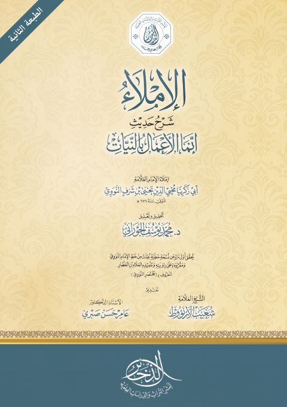

Downloads need an internet connection.
الإملاء في شرح حديث إنما الأعمال بالنيات
Authors: يحيى بن شرف النووي
Editors: محمد بن يوسف الجوراني
Publishers: الذخائر لنشر التراث
**▫️ العنوان: الإملاء في شرح حديث إنما الأعمال بالنيات** ▪️ المؤلف: #يحيى_بن_شرف_النووي ▫️ المحقق: #محمد_يوسف_الجوراني ▪️ الناشر: #الذخائر_لنشر_التراث ▫️ تاريخ النشر: 1439هـ 2018م ▪️ بلد النشر: عمان، #الأردن ▫️ الطبعة: 2 ▪️ عدد الأجزاء: 1 ▫️ الصفحات: 185 ▪️ نوع الوعاء: #كتاب ▫️ التصنيف الرئيسي: #الحديث_وعلومه ۪